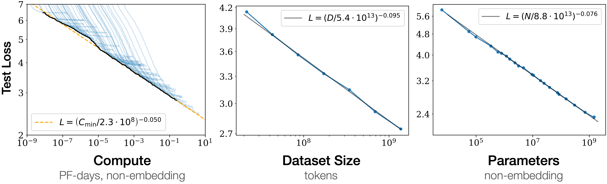
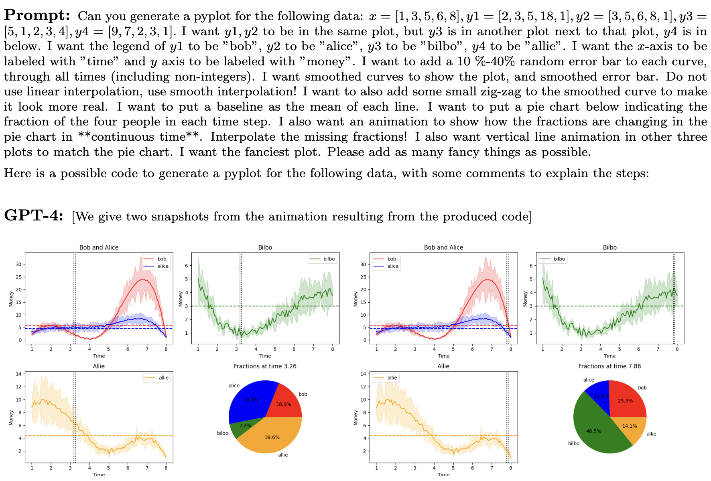
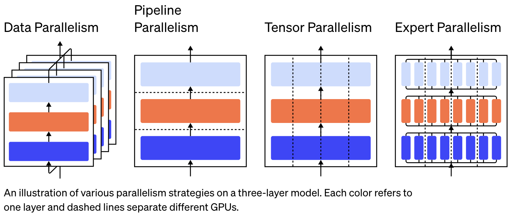

A Blog Entry on Bayesian Computation by an Applied Mathematician
$$
$$
1 トランスフォーマー
1.1 名前の由来と背景
トランスフォーマー (Vaswani et al., 2017) は，注意 (attension) という機構を通じて，時系列データの依存関係を効率的に学習することの出来るモデルである．この「変換器」という名前は，後述の内部表現ベクトル \(Y\) を，入力 \(X\) から次元を変えずにより良いものに「変換する」というところから名前が付けられている．
初めは自然言語処理（特に機械翻訳）の文脈で導入されたデコーダーとエンコーダーの組からなるモデルであるが，そのエンコーダー部分だけで言語，画像，動画などあらゆる系列データのモデリング全体で抜群の性能を発揮する上に，これら複数ドメインのデータを組み合わせてモデリングすることもできる（第 4 節）．
さらに，トランスフォーマーはアーキテクチャとして（CNN や RNN などに比べると）シンプルであり，大規模なデータセットで大規模なモデルを訓練することが出来るスケーラビリティが魅力である．また，モデルの大きさに対して性能が単調に改善するというスケーリング則 (Hestness et al., 2017), (Kaplan et al., 2020) が成り立つことが示されており，大規模な資源を投下して大規模なモデルを作る経営判断も下しやすかった．

その後すぐに，一度大規模なモデルを訓練してしまえば，少しの修正を施すのみで種々の下流タスクに適用することが可能であることが発覚した．これを 基盤モデル という（第 3.2 節）．
1.2 注意機構
トランスフォーマーの核はその注意機構にある．とはいっても，注意機構自体はトランスフォーマー以前から存在した技術である．
元々機械翻訳に用いられていたエンコーダー・デコーダー型の RNN の性能を向上させる機構として提案された (Bahdanau et al., 2015)．その後，(Vaswani et al., 2017) の Attention is All You Need とは，注意機構のみが重要で，RNN としての構造（や画像では畳み込みの構造）を排してシンプルにした方が更に性能が向上する，という報告である．
時系列データの解析では，そして自然言語処理ではとりわけ，文脈というものが重要である．しかし文脈は長期の依存関係になることもしばしばあり，従来の RNN ではこのモデリングに苦労していた (bottleneck problem)．
注意機構は，遠く離れた２つのトークンも直接に相互作用を持つアーキテクチャになっており，この点を抜本的に解決したものである．その結果，元の RNN のアーキテクチャも不要とするくらいのモデリング能力を，自然言語のみでなく，画像や動画に対しても示したのである．
注意機構は自己注意と交差注意に分けられる．
1.2.1 枠組み
トランスフォーマーに入力する系列を \(\{x^n\}_{n=1}^N\subset\mathbb{R}^D\) で表す．生のデータをそのままモデルに入れるわけではないので，別の言葉で呼び変える．
慣習として，特に言語データの場合は各 \(x^n\) を トークン (token) という．画像では パッチ (patch) ともいう．
以降，\(X:=(x^n)_{n=1}^N\in M_{ND}(\mathbb{R})\) とも表す．
1.2.2 自己注意機構のプロトタイプ
自己注意機構とは，\(Y=AX\) によって定まる \(M_{ND}(\mathbb{R})\) 上の線型変換 \(X\mapsto Y\) のことである： \[ y^n=\sum_{m=1}^N a^n_mx^m, \tag{1}\] \[ a^n_m=\frac{e^{(x^n)^\top x^m}}{\sum_{k=1}^Ne^{(x^n)^\top x^k}}. \tag{2}\] ここで，\(A=(a^n_m)_{n,m\in[N]}\in M_N(\mathbb{R})\) は 確率行列 をなし，その成分を 注意荷重 (attention weight) という．
この変換において，同じ \(x^m\) の値を，３回別々の意味で使われていることに注意する：
- Equation 1 における \(x^m\) は，新たな表現 \(y^n\) を作るためのプロトタイプにような働きをしている．これを 値 (value) という．
- Equation 2 において，内積が用いられており，\(x^n\) と \(x^m\) の類似度が測られている．
- \(x^m\) を，\(x^m\) が提供出来る情報を要約した量としての働きをし，鍵 (key) という．
- \(x^n\) は，\(x^n\) と関連すべき情報を要求する役割を果たし，クエリ (query) という．
- 最終的に，鍵とクエリの類似度・マッチ度を，ソフトマックス関数 を通じて確率分布として表現し，値の空間 \(\{x^m\}_{m=1}^N\) 上の確率質量関数 \(\{a^n_m\}_{m=1}^N\) を得ている．これに関して 平均する ことで，鍵 \(y^n\) を得る．
1.2.3 内積による自己注意機構
３つの別々の役割を果たしている以上，それぞれ固有の表現を持っていても良いはずである．そこで，値，鍵，クエリに，それぞれにニューラルネットワーク \(W_{(\Lambda)}\in M_{DD_{(\Lambda)}}(\mathbb{R})\;(\Lambda\in\{V,K,Q\})\) を与えて固有の表現 \[ x_{(\Lambda)}^n:=XW_{(\Lambda)} \] を持たせ，この \(W_{(\Lambda)}\) を誤差逆伝播法により同時に学習することとする．
こうして得るのが，内積による自己注意機構 (dot-product self-attention mechanism) である．このとき，\(D_{(K)}=D_{(Q)}\) は必要だが，\(y^n\in\mathbb{R}^{D_{(V)}}\) は，元の次元 \(D\) と異なっても良いことに注意．
最後に，ソフトマックス関数の適用において，勾配消失を回避するために，次元 \(D_{(K)}\) に応じたスケーリングを介して \[ a^n_m=\frac{e^{\frac{\left(x^n_{(Q)}\right)^\top x^m_{(K)}}{\sqrt{D_K}}}}{\sum_{k=1}^Ne^{\frac{\left(x^n_{(Q)}\right)^\top x^k_{(K)}}{\sqrt{D_K}}}} \] とする．これを最終的な 自己注意機構 (scaled dot-product self-attention mechanism) という．
1.2.4 交差注意
デコーダーとエンコーダーの接続部に用いられる 交差注意 (cross attention) については，ここでは触れない．
1.2.5 マスキング
実際に学習するとき，注意荷重 \(A\) は上三角部分が \(-\infty\) になったものを用いる．
これは，次のトークンを予測するにあたって，そのトークンより後のトークンを見ないようにするためである．
1.3 トランスフォーマーの全体
注意機構に加えて，次の３要素を含め，典型的には 20 から 24 層を成した深層ニューラルネットワークがトランスフォーマーの全てである．1

1.3.1 多頭注意
以上の自己注意機構を１単位として，これを複数独立に訓練し，最終的にはこれらの線型結合を採用する仕組みを 多頭注意 (multi-head attention) という．
これにより，種々の文脈をより頑健に読み取ることが出来るようである．
1.3.2 残差結合と正規化
更に勾配消失を回避するために，残差結合 を導入し，訓練の高速化のために正規化 (Ba et al., 2016) が導入される．
そして，モデルを大規模化していくには，この「多頭注意＋残差結合と正規化」のブロックを積み重ねる．
1.3.3 多層パーセプトロン
注意機構は線型性が高いため，多頭注意の層の間に，通常の Feedforward ネットワークもスタックして，ネットワークの表現能力を保つ工夫もされる．
1.3.4 正規化レイヤーについての補足
レイヤー正則化 (layer normalization) (Ba et al., 2016) は，バッチ正規化 (batch normalization) (Ioffe and Szegedy, 2015) が RNN にも適するようにした修正として提案された．
バッチ正規化は，ニューラルネットワークの内部層の学習が，手前の層のパラメータが時事刻々と変化するために安定した学習が出来ないという 内部共変量シフト (internal covariate shift) にあると突き止め，これをモデルアーキテクチャに正規化層を取り入れることで解決するものである．
正規化層は，ニューラルネットワークへの入力を，平均が零で分散が \(1\) になるように変換する．元々，ニューラルネットワークの入力を正規化してから学習させることで学習が効率化されることは知られていた (LeCun et al., 2012) が，バッチ正規化は，これをバッチごとに，かつ，モデルの内部にも取り込んだものである．
バッチ正規化は精度の上昇と訓練の加速をもたらす．これはバッチ正規化により大きな学習率で訓練しても活性化が発散せず，これにより訓練時間の短縮と，局所解に囚われにくく汎化性能の向上がもたらされているようである (Bjorck et al., 2018)．
1.4 なぜトランスフォーマーはうまく行くのか？
注意機構は全体として線型変換になっている．これをカーネル法などを用いて非線型にする試みは多くあるが，これは成功していない．2
その代わり，トランスフォーマーのパラメータ数のほとんどは FF 層（ Section 1.3.3 ）によるものであり，この層が大きな表現能力を持っていることが，トランスフォーマーの性能を支えていると考えられている．3
注意機構は，遠く離れた２つのトークンを直接相互作用可能にすることに妙がある．実際，注意機構は，荷重行列を入力から学習するような，荷重平均プーリング (weighted mean pooling) ともみなせる．
2 言語トランスフォーマー
トランスフォーマーの訓練は，後述するように事前学習と事後調整からなる．事後調整は Section 3 で述べる．ここでは，事前学習を，言語を例に取って説明する．
トランスフォーマーの事前学習とは レトロニム であり，トークン（≒単語）上の確率分布をモデリングをすることに他ならない．
古典的には \(n\)-gram Section 2.2.1 などのモデルが用いられていたが，これをニューラルネットワークによって作ることはトランスフォーマー以前から試みられていた (Bengio et al., 2000)．
その後，トランスフォーマーの登場まで，これには RNN Section 2.2.2 が主に用いられていた．しかし，RNN は長い系列に対しては勾配消失とボトルネック問題が起こりやすく，また，訓練の並列化が難しいという問題があった．
2.1 言語の取り扱い
2.1.1 単語の分散表現
言語をそのまま扱うのではなく，トークン \(x^n\in\mathbb{R}^D\) の形に符号化する必要がある．
言語には他にも改行や数式，コンピューターコードがあるが，まずは単語の表現を考える．
単語を Euclid 空間内に埋め込んだものを 分散表現 (distributed representation) という．これを２層のニューラルネットワークで行う技術が word2vec である (Tomas Mikolov, Chen, et al., 2013), (Tomas Mikolov, Sutskever, et al., 2013)．
その訓練法には２つあり，窓の幅を \(M=5\) などとすると，
- CBOW (Continuous Bag of Words)：前後 \(M\) 語のみを見せて，中央の語を予測する．
- Continuous Skip-gram：中央の語を見せて，前後 \(M\) 語を予測する．
という，いずれも教師なしの方法によって学習される．
2.1.2 トークン化
バイトペア符号化 (BPE: Byte Pair Encoding) (Sennrich et al., 2016) は，データ圧縮の手法であるが，単語に限らず種々のデータを含んだ文字列を符号化するのに用いられる．
2.1.3 位置情報符号化
トランスフォーマーはそのままではトークンの順番を考慮しないため，トークンの順番の情報も符号化時に含める必要がある．これを 位置情報符号化 (positional encoding) という (Dufter et al., 2021)．
このようにして，位置情報はトランスフォーマーのモデル構造を修正して組み込むのではなく，符号化の段階で組み込み，トランスフォーマーはそのまま使うのである．
これは，位置情報をトークンと同じ空間に埋め込んだ表現 \(r^n\) を学習し， \[ \widetilde{x}^n:=x^n+r^n \] を新たな符号とする．4
2.2 従来の言語モデル
文章をトークン列 \(\{x^n\}_{n=1}^N\subset\mathbb{R}^D\) に置き換えたあとに，この上の結合分布 \(p(x^1,\cdots,x^N)\) をモデリングすることが，言語モデル の目標である．
2.2.1 \(n\)-gram
\(n\ge1\) とし，\(x_i=0\;(i\le0)\) として， \[ p(x_1,\cdots,x_N)=\prod_{i=1}^Np_{\theta_i}(x_i|x_{i-n},\cdots,x_{i-1}) \] という形で \(p\) をモデリングする．
これを \(n\)-gram モデルと呼ぶが，文章の長さ \(N\) が大きくなると，必要なパラメータ \(\theta_n\) の数が増加する．
これに対処する方法としては，隠れ Markov モデル を用いることが考えられる．
ニューラルネットワーク (Bengio et al., 2000) を用いることも出来る．しかし，依存の長さ \(n\ge1\) が固定されていることはやはり問題である．
2.2.2 RNN
長さ制限のない長期的な依存関係を Feedback network によって表現することが，(T. Mikolov et al., 2010) によって試みられた．
これは通常のニューラルネットワーク (FFN: Feedforward Network と呼ばれる) に，出力の一部を次の入力に使うという回帰的な流れを追加することで，隠れ Markov モデルのように次に持ち越される内部状態を持つことを可能にしたモデルである．
しかしこれは学習が困難であることと，結局長期的な依存関係は効率的に学習されないという２つの問題があった．
誤差の逆伝播を時間に対しても逆方向に繰り返す必要がある (Backpropagation through time) ので，長い系列に対しては逆伝播しなければいけない距離が長く，勾配消失・爆発が起こりやすい．これは長期的な依存関係を学習しにくいということももたらす．5 また，並列化も難しく，大規模なモデルの学習は難しい．
これに対処するために，モデルの構造を変えて過去の情報を流用しやすくする方法も種々提案された．LSTM (Long short-term memory) (Hochreiter and Schmidhuber, 1997) や GRU (Gated Recurrent Unit) (Cho et al., 2014) などがその例である．
2.3 トランスフォーマーによる言語モデルとその訓練
トランスフォーマーによる言語モデルの最大の美点は，自己教師あり学習による言語モデルの学習が可能である点である．これによりインターネットに蓄積していた大量のデータが利用可能になる．
パラメータを自己教師あり学習により初期化することで，言語モデルの性能が大幅に改善できることは (Dai and Le, 2015) が LSTM 入りの RRN における実験を通じて最初に指摘したようである．
ラベルデータを必要とするならば，これは本当の意味でスケーラブルではなかったであろう．
- BERT (Bidirectional Encoder Representations from Transformers) (Devlin et al., 2019) は，双方向エンコーダーである．
- GPT (Generative Pre-trained Transformer) (Radford et al., 2018) は，単方向デコーダーである．
- BART (Bidirectional and Auto-Regressive Transformer) (M. Lewis et al., 2020) は，双方向エンコーダーと単方向デコーダーの両方を持つ．
2.3.1 デコーダーのみの言語モデル
GPT などの生成モデルは，デコーダー部分のトランスフォーマーの機能を主に用いている．
これはまず，
- トークン列 \((x^n)_{n=1}^{N-1}\) を入力し，条件付き分布 \(p(x^N|x_1,\cdots,x^{N-1})\) を得る．
- 分布 \(p(x^N|x_1,\cdots,x^{N-1})\) からサンプリングをする．
の２段階で行われる．こうして \((x^n)_{n=1}^N\) を得たら，次は \(x^{N+1}\) を生成し，文章が終わるまでこれを続けることで，最終的な生成を完遂する．
2.3.1.1 条件付き分布の表現
大規模なデータセットの上で，文章を途中まで読み，次のトークンを推測する，という自己教師あり学習を行うことで，トークン上の条件付き分布を学習する．
この際に，先のトークンの情報は使わないように，注意機構を工夫 (masked / causal attention) して訓練する．
2.3.1.2 条件付き分布からのサンプリング
仮に最も確率の高いトークンを毎回選択する場合，出力は決定論的であり，同じ表現を繰り返すことが多くみられる．
実は，より人間らしい表現は，確率の低いトークンもかなら頻繁に採用される (Holtzman et al., 2020)．
かと言って，純粋なサンプリングをしたのでは，文章全体から見て意味をなさない場合も多い．
これを解決したのが top-\(p\) sampling / nucleus sampling (Holtzman et al., 2020) である．
GPT-2 にも実装されている ようである．
2.3.2 エンコーダーのみの言語モデル
BERT (bidirectional encoder representations from transformers) (Devlin et al., 2019) などの言語理解モデルは，エンコーダ部分のトランスフォーマーの機能を主に用いている．その結果，生成は出来ない．
訓練は，データセットから単語を確率的に脱落させ，これを補完するように訓練する．結果として，文章の前後両方 (bidirectional) の文脈を考慮するようになるのである．
実際に使う際は，例えば感情の判別などでは，文章の冒頭に [class] などの特殊なトークンを置き，これをエンコーダーに通してトークンが何に置き換わるかを見ることで，判別を実行することができる．
2.3.3 エンコーダー・デコーダーの言語モデル
トランスフォーマーは原論文 (Vaswani et al., 2017) では，エンコーダーとデコーダーがセットになったモデルとして提案された．
これは機械翻訳を念頭に置いていたため，RNN の構造を引き継いだ形で提案されたためである．この場合，次のようにしてモデルは使われる
- 入力 \(X\) をエンコーダーに通し，内部表現 \(Z\) を得る．
- この内部表現 \(Z\) を元に，デコードした結果 \(Y\) を出力する．
- 唯一，\(Z\) をデコーダーに渡す部分での注意機構層では，鍵と値としては \(Z\) を使うが，クエリとしては \(Y\) を使う．
３の機構を エンコーダー・デコーダーの注意機構 (encoder-decoder / corss attention mechanism) といい，これによって \(Z\) と \(Y\) のトークンの間の類似度をモデルに取り入れる．
2.4 近年の進展
2.4.1 分布外データに対するロバスト性
GPT-4 などの大規模言語モデルが，コンテクスト内学習 (in-context learning) が可能であることが，興味深い現象として解析されている．
この文脈内学習とは，パラメータをそのタスクに対して事後調整した訳でもないのに優れた性能を見せること を指す (Garg et al., 2022)．

これの理論的な解明が進んでいる．
トランスフォーマーの注意機構をデータが通過する過程が，勾配降下を通じて局所モデルを学習する過程と等価になっている見方が指摘されている (von Oswald et al., 2023)．すなわち，トランスフォーマーを通過すること自体が，汎用的な学習そのものになっている (Akyürek et al., 2023), (Bai et al., 2023), (Guo et al., 2024), (Kim and Suzuki, 2024)．
2.4.2 状態空間モデルによる依存構造モデリング
トランスフォーマーの注意機構はデータ内の長期的な依存関係をモデリングできる点が革新的なのであった．
しかし，そのシークエンスの長さに対して計算複雑性が非線型に増加してしまう点を改良すべく，種々の代替的なアーキテクチャが試みられており，中でも状態空間モデルを中間層に用いるモデルが注目されている．
しかし，まだまだ長期的な依存関係の処理を苦手とするため，言語においては注意機構ほど性能が出ず，トランスフォーマーに比べて並列計算が難しいために実行速度が遅くなる，という問題がある．
しかし，これらは解決可能で，トランスフォーマーの性能を凌駕する可能性があるとされている (Gu et al., 2022), (Fu et al., 2023)．まず，状態空間モデルのパラメータを入力から決めることで依存関係のモデリングを豊かにし（ 選択的状態空間モデル (Selective SSM) (Gu and Dao, 2024) ），並列可能なアルゴリズムも提案されている．
実際に，選択的状態空間モデルを注意機構と多層パーセプトロン層の代わりに取り入れた Mamba (Gu and Dao, 2024) は同じサイズのトランスフォーマーの性能を凌駕する．
3 基盤モデル
大規模なトランスフォーマーを，インターネットに蓄積していた大量のデータを用いて訓練することにより得るモデルは，チャットボットや感情分析，要約など種々の下流タスクに少しの事後調整を施すだけで抜群の性能を発揮することが発見された．
これを 基盤モデル という．
3.1 大規模言語モデル
3.1.1 名前の由来と背景
自然言語処理にトランスフォーマーを応用した例は大きな成功を見ている．GPT (Radford et al., 2018), GPT-2 (Radford et al., 2019), GPT-3 (Brown et al., 2020), GPT-4 (OpenAI, 2023b) のシリーズはその代表であり，特に GPT-4 はその文脈内学習能力（第 2.4.1 節）の高さから AGI の実現に向けた重要な一歩とも評されている (Bubeck et al., 2023)．
その成功は，アーキテクチャとして優れているという点よりもむしろ，並列化が可能であり GPU などの計算資源を効率的に使える (Weng and Brockman, 2022) という点にあり，アーキテクチャの改良よりも計算資源の増強が最終的に大きな進歩をもたらすという側面が大きい，という認識が優勢になっている (R. Sutton, 2019)．これはスケーリング則として理論的にも理解が試みられている (Kaplan et al., 2020)．
この観点から，トランスフォーマーを用いた事前学習済みの言語モデルが，種々のタスクをほとんど例示なし (few-shot / zero-shot) で解ける能力を創発する程度に大きい場合，その規模が意味を持つことを強調して，大規模言語モデル (LLM: Large Language Model) とも呼ぶ (Zhao et al., 2023)．
3.1.2 最適なモデルサイズ
従来の LLM は，訓練データに対してモデルが大規模すぎる 可能性があることが (Hoffmann et al., 2022) で指摘された．
| Model | Parameters | Training Tokens |
|---|---|---|
| LaMDA (Thoppilan et al., 2022) | 137B | 168B |
| GPT-3 (Brown et al., 2020) | 175B | 300B |
| Jurassic (Lieber et al., 2021) | 280B | 300B |
| Gopher (Rae et al., 2021) | 280B | 300B |
| Chinchilla | 70B | 1.4T |
最適なパラメータ-学習データサイズの比を考慮して設計された Chinchilla (Hoffmann et al., 2022) は，モデルのサイズは最も小さいにも拘らず，種々の下流タスクに対して，他のモデルを凌駕することが (Hoffmann et al., 2022) で報告されている．

3.1.3 訓練の並列化
ここまで大規模なモデルだと，訓練時の GPU の並行計算を適切に計画することが肝心になる．

ByteDance の MegaScale (Jiang et al., 2024) は，12,288 の GPU を用いながら，55.2 % の Model FLOPs Utilization を引き出した．
更なる LLM の訓練の効率化には，GPU による並列計算におけるボトルネックである メモリ帯域幅 を克服するために，分散型訓練手法を採用することが提案されている．
3.2 「基盤モデル」と事後調整
GPT の P とは Pre-trained である．自己教師あり学習によって 事前学習 をしたあと，その後のタスクに応じて，教師あり学習によって 事後調整 (fine-tune) を行う．6
事後調整では，目的関数に KL 乖離度を入れるなどして，元のモデルから遠く離れすぎないように工夫されている．
事後調整を行う前の大規模言語モデルのことを，種々の応用や下流タスク (downstream task) の基礎となるモデルであることと，そのものでは未完成であることとを強調して，基盤モデル (foundation model) とも呼ばれる (Bommasani et al., 2021)．
事後調整では，モデルの全体では規模が大きすぎるため，出力層の後に新しいニューラルネットを付加したり，最後の数層のみを追加で教師あり学習をしたりする方法が一般的である．または，LoRA (Low-Rank Adaptation) (E. J. Hu et al., 2021) では，トランスフォーマーの各層に新たな層を挿入し，これを学習する．
これは，事後調整に有効な内的次元は実際には小さく (Aghajanyan et al., 2021)，これに有効にアクセスし，効率的な事後調整を行うことが出来るという．さらに (Zhou et al., 2023) によると，事後調整に必要なラベル付きデータは，量よりも質が重要であり，LLaMA に対しても多くて 1000 データで十分であるようである．
事後調整には，他にも，ChatGPT のようなサービスを展開するために必要なユーザー体験の改善を目的としたものも含まれる．これは アラインメント とも呼ばれ，強化学習が用いられることが多い．実際，GPT-4 では 人間のフィードバックによる強化学習 (RLHF: Reinforcement Learning through Human Feedback) (Christiano et al., 2017) が用いられている (OpenAI, 2023b, p. 2)．
これについては第 3.5 節で改めて論じる．．
3.3 プロンプトエンジニアリング
基盤モデルには世界と人間に対する膨大な知識が含まれているが，使い方によって大きく性能が変わる．正しい条件付けを行うことで，内部に存在する知識をうまく引き出すことができる．これを大規模言語モデルでは prompt engineering (Liu et al., 2023) という．プロンプトの送り方によって性能がどう変わるかを調べる新たな分野である．
その結果，プロンプト内で新たなタスクを定義するだけで，またはいくつか例を与えるだけで，これが解けてしまうこともわかっており，これを zero-shot または few-shot learning という．
3.4 RAG
LLM は世界に関する正確な知識を持っており，知識ベースとしての利用も期待されている (Petroni et al., 2019)．7 しかし，知識を正確に，そして信頼出来る形で引き出すことが難しいのであった．
特に，出典を示すことや，最新の知識のアップデートなどが難題として待っている．
そこで，LLM に（自由に外部情報を探索できるという意味で）ノンパラメトリックな知識ベースを接続することで解決するのが RAG (Retrieval-Augmented Generation) モデル (P. Lewis et al., 2020) である．
DPR (Dense Passage Retriever) (Karpukhin et al., 2020) は文書を密に符号化する手法を開発し，これを用いて文書検索をすることで Q&A タスクを効率的に解く手法を提案した．このような文書の符号化器は 検索器 (retriever) と呼ばれる．
RAG (P. Lewis et al., 2020) はこの検索器を BART (M. Lewis et al., 2020) に接続した．
REALM (Retrieval-Augmented Language Model) (Guu et al., 2020) も同時期に提案されている．
Meta での研究 (Yasunaga et al., 2023) はこの検索器を Text-to-Image トランスフォーマー である CM3 (Aghajanyan et al., 2022) と結合することで，初めて言語と画像の両方を扱える RAG モデル RA-CM3 (retrieval-augmented CM3) を構成した．
WebGPT (Nakano et al., 2022) は，RAG や REAML が文書検索をしているところを，Web 検索を実行できるようにした GPT-3 (Brown et al., 2020) の事後調整である．
3.5 アラインメント
LLM などの機械学習モデルを訓練する際の目的関数は，そのままでは人間社会が要請するものとずれがあることが多い．これを修正するような試みを アラインメント (alignment) という．
For example, large language models can generate outputs that are untruthful, toxic, or simply not helpful to the user. In other words, these models are not aligned with their users. (Ouyang et al., 2022)
加えて，人間の選好は，0-1 損失関数で表現できるものではないことが多い．そこで，強化学習を用いることが考えられた．しかし，一々人間がフィードバックを与える方法はスケーラビリティに深刻な問題があるため，「人間の選好」をモデリングするニューラルネットワークを 代理モデル (surrogate model) として構築することも考える．
その代表的な手法が 人間のフィードバックによる強化学習 (RLHF: Reinforcement Learning through Human Feedback) (Christiano et al., 2017) である．
InstructGPT (Ouyang et al., 2022) は OpenAI API を通じて寄せられたフィードバックを用いて，PPO (Proximal Policy Optimization) アルゴリズム (Schulman et al., 2017) による強化学習により事後調整をしたものである．
近接ポリシー最適化 (PPO: Proximal Policy Optimization) アルゴリズム (Schulman et al., 2017) は 信頼領域ポリシー最適化 (TRPO: Trust Region Policy Optimization) (Schulman et al., 2015) の洗練化として提案されたもので，現在の RLHF においても最も広く使われている手法である (Zheng et al., 2023)．
InstructGPT が ChatGPT の前身となっている．
4 多相トランスフォーマー
トランスフォーマーは自然言語処理の文脈で開発されたが，画像や動画，音声 (Radford et al., 2023a)，さらにはプログラミング言語 (Chen et al., 2021) にも適用されている．
動画はまだしも画像には，直感的には時系列構造がないように思えるが，トランスフォーマーはもはや汎用のニューラルネットワークアーキテクチャとして使用できることが解りつつある．
それぞれの応用分野で モデルの構造は殆ど差異がなく，トークン化の手法などに差異があるのみのように見受けられる．8
4.1 画像認識トランスフォーマー (ViT)
画像の分類問題を解くためのエンコーダ・トランスフォーマーは ViT (Vision Transformer) (Dosovitskiy et al., 2021) と呼ばれており，ILSVRC (the ImageNet Large Scale Visual Recognition Challenge) では未だ ResNet 系のモデルが優勢であった 2021 年に，これを超える性能を示した．
実はモデルは殆どトランスフォーマーそのままであり，肝要であったのは画像をトークン化である．ピクセルをそのまま用いるのではなく，ある程度大きなピクセルの集合である パッチ (patch) を用いることで，計算量を下げる．(Dosovitskiy et al., 2021) では \(16\times16\) サイズなどが採用された．
一方で，画像を恣意的に系列化しているため，幾何学的な構造は１から学ぶ必要があり，最初からモデルに組み込まれている CNN よりは一般に多くの訓練データを必要とする．だが，これにより帰納バイアスが弱いということでもある．9
ViT はその後，動画も扱える ViViT (Arnab et al., 2021), あらゆるアスペクト比に対応する NaViT (Native Resolution ViT) (Dehghani et al., 2023) などの拡張が続いた．
DeepMind の Perceiver (Jaegle et al., 2021) は画像，動画，音声のいずれのメディアの分類問題にも対応可能な，非対称な注意機構を持つトランスフォーマーである．
4.2 画像生成トランスフォーマー
一方でデコーダートランスフォーマーを用いて，画像の生成モデリングを行った最初の例は ImageGPT (Chen et al., 2020) である．
なお，自己回帰的な生成モデルを通じて画像の生成を試みることは，CNN (van den Oord, Kalchbrenner, Vinyals, et al., 2016) や RNN (van den Oord, Kalchbrenner, and Kavukcuoglu, 2016) でも行われていた．
この際に判明したことには，画像の分類タスクでは連続表現が役に立っても，生成タスクでは高い解像度を持った画像の生成が難しく，離散表現が有効であることが知られている．しかしこれではデータ量が増えてしまうため，画像の ベクトル量子化 が行われることが多い．
そこで，ImageGPT (Chen et al., 2020) でも \(K\)-平均法によるクラスタリングが行われており，さらに VQ-VAE を用いたデータ圧縮も行われている．
ImageGPT (Chen et al., 2020) では最終的に各ピクセルを one-hot 表現にまで落とし込み，これを GPT-2 モデル (Radford et al., 2019) につなげている．
MUSE (Chang et al., 2023) も，トランスフォーマーを用いた画像生成モデルの例である．
4.2.1 拡散モデルとの邂逅
潜在拡散モデル で U-Net (Ronneberger et al., 2015) を用いていたところをトランスフォーマーに置換した 拡散トランスフォーマー (DiT: Diffusion Transformer) (Peebles and Xie, 2023) が発表された．
その後，確率的補間 によって DiT を改良した SiT (Scalable Interpolant Transformer) (Ma et al., 2024) が発表された．
4.3 Text-to-Image トランスフォーマー
この分野は (Reed et al., 2016) 以来，初めは GAN によるアプローチが試みられていた．
GPT-3 (Brown et al., 2020) と ImageGPT (Chen et al., 2020) とは殆ど同じモデルを用いている．これらを組み合わせたデコーダー型のトランスフォーマーが DALL-E (Ramesh et al., 2021) である．10
トークン化して仕舞えば，言語も画像も等価に扱えるというのである．Google の Parti (J. Yu et al., 2022) も同様のアプローチである．
Meta の CM3 (Aghajanyan et al., 2022) と CM3leon (L. Yu et al., 2023) は画像と言語を両方含んだ HTML ドキュメントから学習している．
Google DeepMind の Flamingo (Alayrac et al., 2022) は画像から言語を生成する．
4.4 Image-to-Text トランスフォーマー
OpenAI の CLIP (Contrastive Language-Image Pre-training) (Radford et al., 2021) は画像の表現学習をする視覚モデルである．これは DALL-E (Ramesh et al., 2021) と同時に開発された重要な構成要素である．
一方で DALL-E2 (Ramesh et al., 2022) では，CLIP により画像を潜在空間にエンコードし，拡散モデルによってデコードする．
DALL-E3 (OpenAI, 2023a) もその改良である．
4.5 動画生成トランスフォーマー
動画を画像の連続と見てトランスフォーマーを応用するアプローチは Latte (Latent Diffusion Transformer) (Rakhimov et al., 2020) に始まる．
VideoGPT (Yan et al., 2021) では動画を 3D の CNN でデータ圧縮，VQ-VAE で量子化して離散的な潜在表現を得た後，GPT と殆ど似たトランスフォーマーに通して学習する．
Wayve の GAIA-1 (Generative AI for Autonomy) (A. Hu et al., 2023) も同様の手法で動画を生成しているが，その動画を用いて自動運転の強化学習に応用する点が画期的である．
OpenAI は 2/15/2024 に Sora (Brooks et al., 2024) を発表した．これも 潜在拡散モデル (Rombach et al., 2022) 同様，自己符号化器による動画の潜在表現を得た上でパッチに分割し，この上で拡散トランスフォーマー (Peebles and Xie, 2023) の学習を行う．
4.6 世界モデルとしてのトランスフォーマー
トランスフォーマーを世界モデルとして用いて，シミュレーションを行い動画を生成し，これをモデルベースの強化学習 (R. S. Sutton and Barto, 2018) の材料とすることが広く提案されている．これは learning in imagination (Racanière et al., 2017) と呼ばれる．11
IRIS (Imagination with auto-Regression over an Inner Speech) (Micheli et al., 2023) はこれに初めてトランスフォーマーを用いた世界モデルから動画生成をした．
GAIA-1 (Generative AI for Autonomy) (A. Hu et al., 2023) は自動運転に特化した世界モデルを，トランスフォーマーを用いて構築している．
他にも，動画生成を強化学習に応用する例としては，OpenAI による VPT (Video Pre-Training) (Baker et al., 2022) がある．
4.7 音声生成トランスフォーマー
OpenAI の Jukebox (Dhariwal et al., 2020) は，VQ-VAE を用いて音声データを圧縮・量子化し，トランスフォーマーに通したものである．
このトランスフォーマーは Sparse Transformer (Child et al., 2019) という，注意機構の計算効率を改良したモデルを用いている．
4.8 Text-to-Speech トランスフォーマー
Microsoft Research の VALL-E (Wang et al., 2023) は，音声データをベクトル量子化によって言語データと全く同等に扱うことで，トランスフォーマーを用いて音声生成を行っている．
4.9 Speach to Text トランスフォーマー
OpenAI の Whisper (Radford et al., 2023b) は encoder-decoder 型のトランスフォーマーを用いている．
References
Footnotes
層の数などの表現は (Hashimoto, 2024) から．↩︎
(Hashimoto, 2024) で聞きました．↩︎
(Hashimoto, 2024) で聞きました．↩︎
もちろん結合することも考えられているが，加算を行うことが現状の多数派であるようである (Hashimoto, 2024)．↩︎
勾配の爆発に対しては gradient clipping などの対症療法が用いられる．↩︎
後述のアラインメントも事後調整の一つであるが，これと区別して，教師ありの事後調整 (supervised fine-tuning) とも呼ばれる．↩︎
パラメトリックな知識ベースとしての利用については (Raffel et al., 2020)，(Roberts et al., 2020) など．一方で (Marcus, 2020) などは，hallucination などの欠点を補う形で，古典的な知識ベースと連結したハイブリット型での使用を提案している．↩︎
モデルの比較は (Raffel et al., 2020) などが行っている．↩︎
トークン化に小規模な CNN を用いてデータ圧縮を行うこともある．↩︎
すなわち，DALL-E は GPT-3 のマルチモーダルな実装である (Tamkin et al., 2021, p. 4)．↩︎
(Ha and Schmidhuber, 2018) は RNN により世界モデルを構築している．(Kaiser et al., 2020) は動画から Atari を学習している．(Hafner et al., 2021) はさらに性能が良い．↩︎